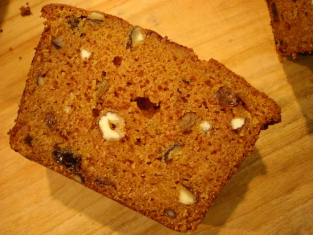

Il faut cultiver notre jardin
“Pangloss disait quelquefois à Candide: ‘Tous les événements sont enchaînés dans le meilleur des mondes possibles; car enfin, si vous n’aviez pas été chassé d’un beau château à grands coups de pied dans le derrière pour l’amour de Mlle Cunégonde, si vous n’aviez pas été mis à l’Inquisition, si vous n’aviez pas couru l’Amérique à pied, si vous n’aviez pas donné un bon coup d’épée au baron, si vous n’aviez pas perdu tous vos moutons du bon pays d’Eldorado, vous ne mangeriez pas ici des cédrats confits et des pistaches.’
‘Cela est bien dit,’ répondit Candide, ‘mais il faut cultiver notre jardin.’”
—Voltaire, Candide
Like Voltaire’s Candide—who slogged his way to the good life through a haphazard and mind-boggling maze of hardships, mistakes, traps, and lost loves—I often wonder at the strange, seemingly slapdash chain of events that delivers us into each second of our lives. Take, for instance, the following: if I hadn’t gone to my dear Northern California college, I might not have gone to Paris in 1999; if I hadn’t gone to Paris, I wouldn’t have befriended Keaton; if I hadn’t befriended Keaton, I wouldn’t have felt so happily inclined to come to Seattle in 2002; if I hadn’t befriended Keaton and come to Seattle, I wouldn’t have met Kate; if I hadn’t met Kate, I wouldn’t have met Nicho; if I hadn’t met Nicho, I wouldn’t have been given bags and coolers full of his homegrown vegetables; and if I hadn’t been given those homegrown vegetables, I might not be here today, typing these words. I might well have starved to death, martyring myself in the name of rent payments and meager monthly contributions to NPR.
But as fate would have it, all but the last did miraculously occur. And today, I feel infinitely lucky to cultivate this Seattle garden, both human and vegetable. After all, we know it could have turned out otherwise.
As befits the season, I’ve recently been showered with Swiss chard and pumpkins, the garden’s bounty. For Halloween, Nicho bestowed upon me a generous-sized pumpkin with a picture-perfect curly stem, cut from his yard that very afternoon. Then, a week or so ago, he called to ask if he could bring over “raw materials” and cook dinner with me. This, dear reader, ranks among the greatest questions in the history of mankind. You can well imagine my answer.
Nicho arrived twenty-four hours later with a bagful of Swiss chard, stubby dirt-flecked carrots, two enormous acorn squashes, and a bunch of mystery greens (which his mother claims is spinach, but it looked more like leafy geranium stems, minus the flowers). He also selected three varieties of sausage at Whole Foods, as well as a couple Belgian beers in tall glass bottles. He knows how I feel about sausage, and he delivers. That is friendship.
I need not tell you how delicious it was; that much is clear. But even better, later in the evening, after I saw him to the door, I discovered that the bag of Swiss chard remained, nearly full.
I slept very, very well.
The next evening, I cut the Swiss chard into a rough chiffonade and sautéed it with thinly sliced onion, stirred it into eggs beaten with salty grated cheese, and cooked it gently on the stovetop, a Swiss chard version of a zucchini-and-Pecorino frittata. It was barely golden, full of sweet onions and bitter greens. Delicious that night, it was even better as room-temperature leftovers, eaten on a couch in the art school café while talking applied anthropology and local scandal with Robert.
But Nicho’s pumpkin remained. It was aging well, although it took up acres of counter-space in my small kitchen. I knew it was a sugar pumpkin and thus ideal for baking, but I was indecisive: cheesecake? Pie? Bread? Then, one night shortly before Thanksgiving, Keaton arrived for cocktails with a pumpkin in her shirt, pregnancy-style; now there were two. The situation was dire. Not being a huge proponent of pumpkin pies and mousses, I set my sights on pumpkin bread, which offered the added benefit of perfuming my apartment with spice and toasted nuts.

A dusty orange color, spotted with crunchy hazelnuts and translucent golden raisins, the bread was tender and moist with a very delicate crumb. It’s sweet and spicy, with an earthy pumpkin flavor and a warm note of ginger. And it would make a lovely gift.
Go cultivate that garden.
Pumpkin Bread with Hazelnuts and Golden Raisins
Adapted from The New Joy of Cooking
1 ½ cups unbleached all-purpose flour
1 ½ tsp ground cinnamon
1 tsp baking soda
1 tsp salt
1 tsp ground ginger
½ tsp ground nutmeg
¼ tsp ground cloves
¼ tsp baking powder
1/3 cup water
½ tsp pure vanilla extract
6 Tbs unsalted butter, at room temperature
1 1/3 cups sugar
2 large eggs, at room temperature
1 cup pumpkin purée (or cooked, puréed—until very smooth—winter squash, yams, or sweet potatoes), at room temperature
½ cup coarsely chopped hazelnuts
1/3 cup golden raisins
Preheat the oven to 350 degrees. Grease (with butter or cooking spray) a 9- by 5-inch loaf pan.
Whisk together flour, cinnamon, baking soda, salt, ginger, nutmeg, cloves, and baking powder until thoroughly blended. In another bowl, mix water and vanilla extract. In a large bowl, beat butter until creamy, about 30 seconds. Gradually add sugar, and beat on medium speed until lightened in color and texture, about 3 minutes. Beat in eggs one at a time. Add pumpkin purée, and beat on low speed until just blended. Add the flour mixture in three parts, alternating with the water-vanilla mixture in two parts, beating on low until smooth and just combined. Scrape down the sides of the bowl with a rubber spatula as necessary. Fold in hazelnuts and raisins. Pour batter into pan and spread evenly across the top.
Bake about one hour, or until a toothpick inserted in the center comes out clean. Let cool in the pan on a rack for five or ten minutes before unmolding to cool completely on the rack.
Note: You’re not obligated to use a loaf pan, of course. You could make muffins, for example; for a standard-sized muffin, bake 18-20 minutes. And this bread freezes beautifully.